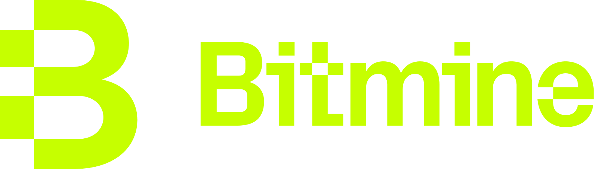
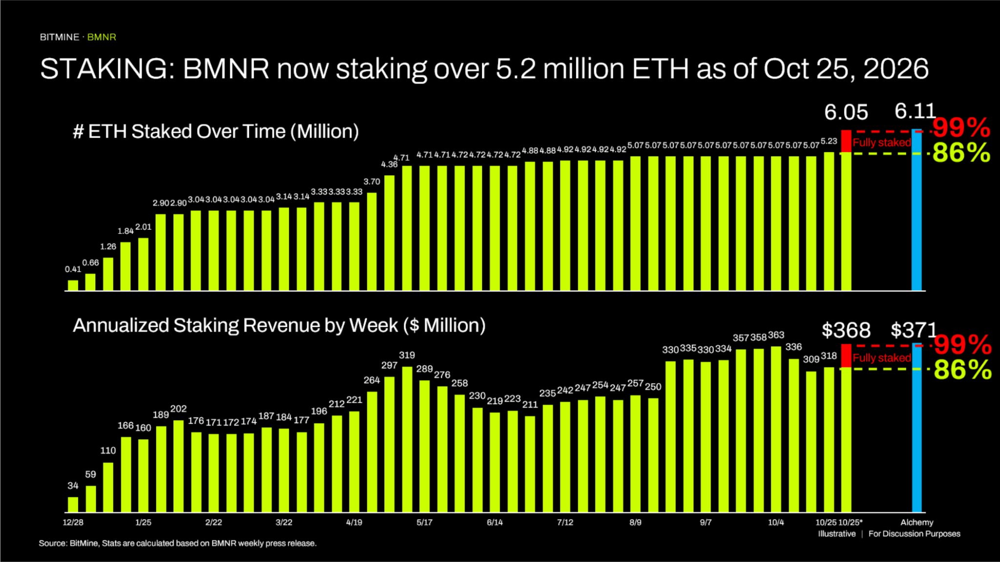

NYSE: BMNR | BMNP
비트마인, 지난주 자사주 204만 주 매입… 2026년 누적 2,290만 주
원문: 2026년 10월 26일 Bitmine Immersion Technologies 보도자료(투자자 업데이트 이메일).

“비트마인은 지난 한 주 동안 평균 매입가 $22.48에 204만 주(2.04 million shares)를 사들이며 자사주 매입을 단행했습니다. 경영진이 비트마인 주가가 상대적으로 저평가되어 있다고 판단할 때, 당사는 시장 여건과 기존 자사주 매입 승인 한도 내에서 주주가치를 높이는 방향(accretively)으로 자사주를 매입할 방침입니다. 주주가치 극대화는 변함없는 당사의 최우선 목표입니다.”
비트마인의 토머스 ‘톰’ 리 회장은 “비트마인은 지난 한 주 동안 평균 매입가 $22.48에 204만 주(2.04 million shares)를 사들이며 자사주 매입을 단행했습니다. 경영진이 비트마인 주가가 상대적으로 저평가되어 있다고 판단할 때, 당사는 시장 여건과 기존 자사주 매입 승인 한도 내에서 주주가치를 높이는 방향으로 자사주를 매입할 방침입니다. 주주가치 극대화는 변함없는 당사의 최우선 목표입니다”라고 밝혔습니다.
비트마인은 2026년 들어 평균 매입가 $17.48, 총액 3억 9,960만 달러($399.6 million) 규모로 보통주 2,290만 주(22.9 million shares)를 매입했습니다. 리 회장은 “이는 크립토 트레저리 기업이 실행한 역대 최대 규모의 보통주 자사주 매입으로, 주주에 대한 당사의 확고한 의지를 보여줍니다”라고 말했습니다.
리 회장은 이어 “크립토 시장도 AI 주식 매도세를 촉발한 것과 같은 ‘위험 회피(risk off)’ 흐름에 영향을 받아 하락했습니다. 그러나 2025년 말이나 2026년 초와 달리 이번 크립토 조정 폭은 비교적 얕았습니다. 최근 고점 대비 ETH는 13% 하락한 반면, 같은 기간 미국 반도체 지수($SOXX)는 20% 내렸습니다. 당사는 이 점이 크립토 강세장이 진행 중임을 뒷받침하는 또 하나의 증거라고 봅니다”라고 설명했습니다.
비트마인은 지난 한 주 동안 10,452 ETH를 매입했습니다. 2025년 6월 30일 ETH 트레저리 전략을 시작한 이후 단 한 주도 빠짐없이 매주 ETH를 사들였으며, 회사는 이러한 꾸준한 매입 실적이 전 세계 상장사 가운데 유례가 없다고 설명합니다. 비트마인은 여전히 이더리움 트레저리 1위, 전 세계 트레저리 2위 자리를 지키고 있습니다.

주간 트레저리 하이라이트
트레저리
자사주 매입 (BUYBACK)
스테이킹
크립토 보유 현황은 2026년 10월 25일 오후 2:00(미 동부시간, 한국시간 10월 26일 오전 3:00) 기준이며, ETH는 코인베이스 가격 $2,356로 평가했습니다. 스테이킹 매출은 7일 수익률 2.58%를 연율화한 예상치입니다.
보도자료 전문 보기 →최신 회장 메시지 · 2026년 10월 7일

톰 리 회장의 10월 메시지가 공개되었습니다. 원본 이메일의 ‘영상 보기(Watch the video)’ 링크에서 시청하실 수 있습니다.
최신 프레젠테이션 보기 →법적 고지 (요약)
- 본 이메일은 정보 제공 목적으로만 작성되었으며, 증권의 매도 청약이나 매수 권유가 아니고 투자·재무·세무·법률 자문으로 해석되어서는 안 됩니다.
- 투자 결정 전 미국 SEC에 제출된 Form 10-K, 10-Q 등 비트마인의 공시 자료(www.sec.gov)를 검토하고 재무·법률 전문가와 상담하시기 바랍니다.
- 본 자료에는 1995년 미국 증권민사소송개혁법상 ‘미래예측진술’이 포함되어 있습니다. 주요 내용: (i) ETH 총공급량 5% 확보 목표(‘5%의 연금술’ 이니셔티브) 및 진행 상황, (ii) 매주 이어지는 ETH 매입과 세계 최대 ETH 트레저리 지위를 포함한 디지털 자산 축적·트레저리 전략, (iii) 경영진이 주가가 상대적으로 저평가되었다고 판단할 때 보통주를 매입하려는 방침과 자사주 매입의 시기·규모·주주가치 제고 효과 및 주주가치 극대화 목표, (iv) 보유 ETH 전체 스테이킹 가정 시 규모 확대 기준 연간 약 3억 6,800만 달러($368 million)의 ETH 스테이킹 보상과 현재 스테이킹 물량 기준 연간 약 3억 1,800만 달러($318 million)의 스테이킹 매출 전망 등 스테이킹 운영, (v) 기관 투자자·수탁 기관·생태계 파트너 대상 MAVAN 확장, (vi) 크립토 강세장 진행·이번 사이클이 역대 최대일 가능성·회사의 강세장 초과 성과 기대 등 시장 상황에 대한 견해, (vii) 미국 반도체 주식 및 기타 위험자산 대비 ETH의 상대적 성과, (viii) GENIUS Act와 SEC ‘Project Crypto’가 금융 서비스를 근본적으로 바꿀 것이라는 견해, (ix) 보유 크립토·현금·유가증권·‘문샷’ 자산의 가치에 관한 진술.
- 이러한 진술은 경영진의 현재 기대와 가정에 근거하며, Form 10-K의 위험 요인 등으로 인해 실제 결과가 크게 달라질 수 있습니다. 회사는 법령상 요구되는 경우를 제외하고 이를 갱신할 의무가 없습니다.